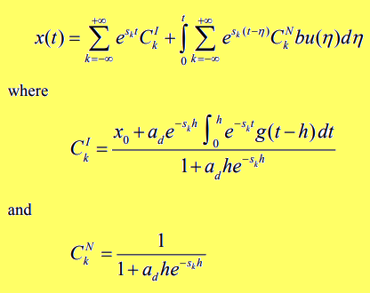

Un metodo di soluzione di una equazione differenziale con ritardo del primo ordine utilizzando la funzione W di Lambert
Questo post è stato ispirato dal paper The Lambert W Function Approach to Time Delay Systems and the LambertW_DDE Toolbox
e da una lezione di matematica della prof.ssa Fausta D'Acunzo di Preparazione 2.0 sulla funzione W di Lambert.
Il post mostra come risolvere un particolare tipo di equazione differenziale con ritardo (abbreviato DDE per Delay Differential Equations) ai valori iniziali utilizzando la funzione W di Lambert; il post non entra nel merito della matematica sottostante
per la quale si rimanda al paper sopra citato e si concentra invece sull'implementazione in Python 3.x con SciPy della soluzione numerica del caso scalare analizzato dal paper stesso.
Se si è invece interessati a risoluzione di equazioni differenziali con ritardo tramite tecniche numeriche,
si veda il post su questo sito Risoluzione di equazioni differenziali con ritardo con metodi numerici in Python.
Per ottenere il codice si veda il paragrafo Download del codice completo in fondo a questo post.
Il problema "DDE caso scalare"
I sistemi a tempo con ritardo (abbreviato TDS da Time Delayed Systems) sono sistemi in cui vi è un significativo ritardo temporale tra l'applicazione dell'input al sistema e l'output conseguente, e tale ritardo può essere intrinseco o introdotto deliberatamente. Un TDS può essere modellato con equazioni differenziali con ritardo. Questo paragrafo analizza il caso di una DDE a coefficienti scalari; dopo le definizioni formali del problema e della soluzione, che fa uso della funzione W di Lambert, viene mostrata l'implementazione di un programma Python con SciPy che realizza pedissequamente la soluzione proposta dal paper. Infine una fase di verifica mostra la correttezza della soluzione entro i limiti di approssimazione accetttabili.
Il problema differenziale e la sua soluzione
Sia dato il seguente sistema che contiene una DDE: $$ \begin{equation} \begin{cases} x'(t) = a x(t) + a_d x(t-h) + b u(t) & t > 0 \\ x(t) = g(t) & t \in [-h, 0) \\ x(t) = x_0 & t = 0 \end{cases} \end{equation} $$ dove:
- $x(t)$ è la funzione incognita
- $a$, $a_d$ e $b$ sono costanti scalari $\in \rm I\!R$
- $h$ è una costante $\in \rm I\!R^+$, quindi strettamente positiva e rappresenta il ritardo (delay)
- $g(t)$ è una funzione che fornisce i valori di $x(t)$ quando la variable tempo $t$ è compresa nell'intervallo $[-h, 0)$
- $x(0) = x_0$ è la condizione iniziale di Cauchy.

Soluzione formale fornita dal paper, specificatamente nel paragrafo 2.3 a pagina 2.

Formula di calcolo di $s_k$, specificatamente nel paragrafo 2.2 a pagina 2.
dove $W_k$ è la funzione W di Lambert di indice $k$.
La funzione W di Lambert è una famiglia di funzioni definite nel campo complesso ottenute al variare dell'indice $k$.
Per approfondimenti si veda Funzione W di Lambert su Wikipedia.
L'implementazione in Python con SciPy
Prima di entrare nel merito dell'implementazione sono necessarie due note:
- la funzione W non può essere espressa in termini di funzioni elementari, quindi ci si servirà dell'implementazione numerica
scipy.special.lambertwfornita da SciPy; -
per il calcolo degli integrali si userà sempre SciPy e in particolare
scipy.integrate.quadtenendo presente però che si opera nel campo complesso (in quanto i vari $s_k$ sono complessi perché calcolati con la $W_k$) e quindi bisognerà avere l'accortezza di integrare separatamente la parte reale dalla parte immaginaria in quantoscipy.integrate.quadnon supporta l'integrazione nel campo complesso.
import numpy as np
from scipy import real, imag
from scipy.integrate import quad
from scipy.special import lambertw
import matplotlib.pyplot as plt
matplotlib.pyplot per il tracciamento dei grafici.Per quanto riguarda la naming convention utilizzata per i nomi delle variabili si sono seguite le due seguenti regole:
-
i nomi degli oggetti matematici presenti nella soluzione proposta dal paper (vedi figure di cui sopra) sono state implementate con variabili Python omonime;
ad esempio le costanti $a$, $a_d$ e $b$ corrispondo alle variabili Python
a,adeb, la funzione incognita $x(t)$ è la funzione Pythondef x(t):e così via; -
riguardo ai nomi delle variabili Python che non hanno una corrispondenza diretta con i nomi degli oggetti matematici
si è scelto di usare nomi volutamente lunghi per renderne chiara la semantica;
ad esempio
k_rangeè il range in cui l'indice $k$ della funzione W varia (da intendersi da-k_rangea+k_range) oppure la variabileint_for_ckiè il valore dell'integrale che è coinvolto nel calcolo di $C_k^I$ e così via.
t_begin=0.
t_end=10.
t_nsamples=101
t_space, t_step = np.linspace(t_begin, t_end, t_nsamples, retstep=True)
k_range=9
a = 0.5
ad = -2.5
b = 1.75
h = 1.
g = lambda t : 1. - 0.1 * t
u = lambda t : 0.2 * t
x0 = 1.5- il tempo $t$ varia da $0$ a $10$ con $101$ campionamenti (quindi passo di discretizzazione uguale a $0.1$);
- l'indice $k$ della funzione W in teoria varia da $-\infty$ a $+\infty$, in questo esempio si limita la variazione da $-9$ a $+9$.
- $a$, $a_d$ e $b$ sono tre coefficienti scelti arbitrariamente; lo sperimentatore può cambiarli liberamente;
- $g(t)$, come già detto, fornisce i valori di $x(t)$ prima del tempo $0$; anche essa è stata definita arbitrariamente a $g(t) = 1 - 0.1 t$.
- anche $u(t)$ è arbitraria e in questo esempio è definita così: $u(t)=0.2 t$
- la condizione di Cauchy è arbitrariamente assegnata a $x_0=1.5$.
sk_fn = lambda k : (1./h) * lambertw(ad * h * np.exp(-a * h), k) + a
SK = [sk_fn(k) for k in range (-k_range, k_range+1)]
SK contiene la lista di tutti i vari $s_k$ precalcolati una volta per tutte.
Segue l'implementazione di $x(t)$ in Python:def x(t):
def integrand_for_cki(t_, sk):
return np.exp(-sk * t_) * g(t_ - h)
def integral_for_cki(sk):
def real_func(t_, sk):
return np.real(integrand_for_cki(t_, sk))
def imag_func(t_, sk):
return np.imag(integrand_for_cki(t_, sk))
real_integral = quad(real_func, 0., h, args=(sk))
imag_integral = quad(imag_func, 0., h, args=(sk))
return real_integral[0] + 1.j*imag_integral[0]
def integrand_for_x_t(eta):
tot = 0.
for k in range (-k_range, k_range+1):
sk = SK[k + k_range]
ck_denom = (1. + ad * h * np.exp(-sk * h))
ckn = 1. / ck_denom
tot += np.exp(sk * (t - eta)) * ckn * b * u(eta)
return tot
def integral_for_x_t():
def real_func(eta):
return np.real(integrand_for_x_t(eta))
def imag_func(eta):
return np.imag(integrand_for_x_t(eta))
real_integral = quad(real_func, 0., t)
imag_integral = quad(imag_func, 0., t)
return real_integral[0] + 1.j*imag_integral[0]
tot = 0.
for k in range (-k_range, k_range+1):
sk = SK[k + k_range]
int_for_cki = integral_for_cki(sk)
ck_denom = (1. + ad * h * np.exp(-sk * h))
cki = (x0 + ad * np.exp(-sk * h) * int_for_cki) / ck_denom
tot += np.exp(sk * t) * cki
tot += integral_for_x_t()
return totintegrand_for_cki e integral_for_cki per realizzare rispettivamente la funzione integranda
e l'integrale coinvolti nel calcolo di $C_k^I$ con la separazione dell'integrazione della parte reale dalla parte immaginaria.Lo stesso vale anche le funzioni annidate
integrand_for_x_t e integral_for_x_t scritte con la stessa logica
per realizzare rispettivamente la funzione integranda e l'integrale coinvolti nel calcolo di $x(t)$.Nota: nella scrittura del codice è stata privilegiata la corrispondenza e la fedeltà tra il codice e la matematica descritta sul paper a discapito di qualche ottimizzazione mancata e di qualche principio di buona programmazione volutamente tralasciato per rendere il codice più leggibile.
Per eseguire il calcolo della funzione $x(t)$ nell'intervallo $t \in [0, 10]$ è sufficiente questa linea di codice:
x_num_sol=[x(t) for t in t_space]x_num_sol è una lista che contiene i valori discretizzati di $x(t)$ nell'intervallo prestabilito.
Si noti che gli elementi della lista sono numeri complessi con la parte immaginaria molto vicina a $0j$;
dovrebbe essere uguale a $0j$ ma non lo è per via delle approssimazioni.Per tracciare il grafico della parte reale e della parte immaginaria (giusto per vedere che sia intorno a $0$) si esegua il seguente codice:
plt.figure()
plt.plot(t_space, np.real(x_num_sol), linewidth=1, label='real')
plt.plot(t_space, np.imag(x_num_sol), linewidth=1, label='imaginary')
plt.title('DDE 1st order IVP solved with W Lambert function')
plt.xlabel('t')
plt.ylabel('x(t)')
plt.legend()
plt.show()
Grafico della funzione $x(t)$, soluzione dell'equazione, calcolata numericamente
La verifica
Non avendo una soluzione analitica da confrontare, la verifica non è così immediata e richiede un doppio passaggio: si calcolano separamente il primo membro e il secondo membro della DDE e poi si mettono a confronto su uno stesso grafico: se i calcoli e l'implementazione sono corretti le due curve saranno praticamente sovrapposte. Naturamente la parte immaginaria, essendo praticamente $0$, non è presa in considerazione nella verifica.
-
Il primo membro (chiamato left), cioè la $x'(t)$, lo si può calcolare approssimando $x'(t)$ con $\frac{{\Delta x(t)}}{{\Delta t}}$
e quindi facendo la differenza tra due valori adiacenti dell'array
x_num_soldiviso per il passo di discretizzazione del tempo. -
Il secondo membro (chiamato right) lo si calcola eseguendo la formula sostituendo i valori formali con i valori attuali dei coefficienti e della funzione $u(t)$
mentre per quanto riguarda $x(t)$ e $x(t-h)$ essi si sostituiscono con i corrispodenti valori dell'array
x_num_solavendo l'accortezza di saltare i valori di $t
num_of_cells_for_h_time = int(h/t_step)
x_num_grad_left = [np.real((x_num_sol[i+1] - x_num_sol[i])) / t_step
for i in range(num_of_cells_for_h_time, t_nsamples-1)]
x_num_grad_right = [
a * np.real(x_num_sol[i]) +
ad * np.real(x_num_sol[i - num_of_cells_for_h_time])
+ b * u(t_space[i])
for i in range(num_of_cells_for_h_time, t_nsamples-1)]plt.figure()
plt.plot(range(num_of_cells_for_h_time, t_nsamples-1), x_num_grad_left, linewidth=1, label='left')
plt.plot(range(num_of_cells_for_h_time, t_nsamples-1), x_num_grad_right, linewidth=1, label='right')
plt.title('Derivative of the solution of DDE solved with W Lambert function')
plt.xlabel('t')
plt.ylabel('x(t)')
plt.legend()
plt.show()]
Grafico della derivata $x'(t)$ calcolata numericamente
eseguendo separamente i calcoli sui membri left e right dell'equazione
eseguendo separamente i calcoli sui membri left e right dell'equazione
Citazioni
Yi, S. , Nelson, P.W. , and Ulsoy, A.G. ,
2007a, "Survey on analysis of time delayed systems via the Lambert w function,"
Dynamics of Continuous, Discrete and Impulsive Systems (Series A) (in press).Yi, S., Duan, S., Nelson, P., and Ulsoy, A. G.,
2012, "The Lambert W Function Approach to Time Delay Systems and the LambertW_DDE Toolbox,"
IFAC Workshop on Time Delay Systems, Boston, MA.Download del codice completo
Il codice completo è disponibile su GitHub.
Questo materiale è distribuito su licenza MIT; sentiti libero di usare, condividere, "forkare" e adattare tale materiale come credi.
Sentiti anche libero di pubblicare pull-request e bug-report su questo repository di GitHub oppure di contattarmi sui miei canali social disponibili nell'angolo in alto a destra di questa pagina.